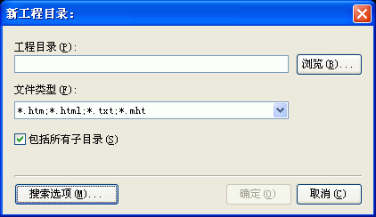

您可以通过选取程序文件菜单下的"新建工程..."或者在程序的主工具栏上按"新建"按钮将看到这个对话框。关于这个对话框的使用请看下面的具体描述.

新建工程对话框用来显示作者的版权信息及用户的注册信息.
工程目录:包括所有子目录:
决定是否让程序导入子目录里的文件.
搜索选项:
这里您可以选择如何自动生成CHM的目录及索引等.
参见：
搜索选项 - TOC标题截取对话框
搜索选项 - TOC图标设置对话框
搜索选项 - 其他对话框
| 版权所有 © 2000-2007 国华软件 保留全部权利. |